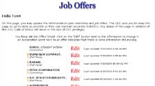

Introduction
This site is used by students at the
GSIA and administrators at the
Career Center. It is currently active, but contains sensitive information
about job offers so it is not accessible to the general public. The career center uses this process to collect the
data that is eventually aggregated and provided to magazines such as
US News and World Reports.
This should provide a brief overview of some of the features.
Two Faces to the System
The student interface
 |
The administrative interface
|
Both interfaces are tied to the same database. Students have the ability to enter, save, and manage job offers.
Employers can go through and approve these job offers, and input job offers themselves.
The Student Interface
|
Image 1: Contextual help and inline reminders about incomplete fields
|
When a student modifies an existing job offer, they are presented with the same form they used to
create the job offer. The only difference is, required but empty fields are colored in orange.
It was designed such that students could create a job offer without filling out all of the fields
because they could always go back and modify them at a later date. The picture at the left also shows the
pop-up box that is used for contextual help on the more difficult questions.
|
|
Image 2: Client-side validation of server-side conflicts
|
There are a lot of subtle aspects of the process that have to be accounted for in the system.
For example, students should not be accepting an offer after having accepted another. The system is
flexible enough to allow this to happen (if a student had mistakenly marked an offer as "accepted")
however it provides a warning that the student is now shifting an accepted offer to declined.
Although the status of their other offers is stored in the database, the system can validate this
conflict on the client side, without making a round trip to the server.
|
The Administrative Interface
|
Image 3: Administrative job offer validation
|
The primary task for administrators is to validate all of these offers to make sure they are accurate.
With that in mind, I designed a process that would make this as quick and easy as possible to iterate through the
submitted offers. Offers are presented so that they fit on a single screen (without scrolling) and are ordered in a
queue based on their order of submission from the students. Approval takes one click (on the button "Approve") and
the offer is removed from the verification queue and the next offer is presented. "Next" and "Previous" buttons allow
the administrator to move around the queue linearly. Their position in the list is represented in the upper-right hand corner.
|
|
Image 4: Modification within the validation process
|
One of the more interesting screens is what appears when you click the "Modify" button on the
administrative interface (Image 4). The output is virtually identical to the original screen,
except now all of the fields are editable. This means that the layout should still be familiar
to the user, and they should be able to more easily find and edit the field in question.
FYI: The "annual salary" field is not editable because it is calculated by the system based on the
other fields, and the red icon next to the company name means that this is a company that is not
already in the system. Approving this job offer will add the company to the system automatically, or
they can click "change" to choose another company.
|
|
Image 5: Searching through offers
|
It is also necessary at times to be able to search through offers or jump to one offer in particular.
This area (Image 5) allows the administrators to do just that, and search on a number of different
attributes. The OfferID links also allow the administrator to jump straight to that record, just as
it had appeared in Image 3. They can then approve or modify it without going down the queue of offers.
|
Other Comments
There are several other features of the system that aren't highlighted here, primarily because they don't have
much of a visual component. One of which is the tuition setting procedure. The tuition value is used to
make calculations when a student receives tuition reimbursement. This value is stored in the ASP object
model at the Application level. Of course, one of the problems with this is that if the server were
rebooted or another Global.asa file were saved, the application level variables would be reset. This
value cannot be hard-coded either, as it changes over time. The solution was a short but interesting
backup storage script that saves the value both in the variable and in a text file. If either of these
is missing, it fills in the other. That way, if the application is restarted and sees that it has no
value for that variable, it can pick it up out of the text file.
There is also an interesting feature that allows administrators to define common mistakes for company names.
This is done in order to preserve data integrity in the database. If a student doesn't find their
company in the list, they may add it as a new company. In some cases, there may be two different
(but similar) names for the same company, and we don't want duplicate entries in the database. By
defining common mistakes, administrators can define certain key entries which, if entered by a student,
should suggest an existing company name that the student might have overlooked.
Finally, there are several automated e-mail components built into the system. Nightly, the system checks
who accepted an offer that day and notifies the administration. In addition, whenever events that might
require administrative attention take place, such as accepting and later declining an offer takes place,
an e-mail is sent notifying the administration of such an event.
{kind=link}
{kind=link}
{kind=link}
{kind=link}
{kind=link}
{kind=link}
{kind=link}